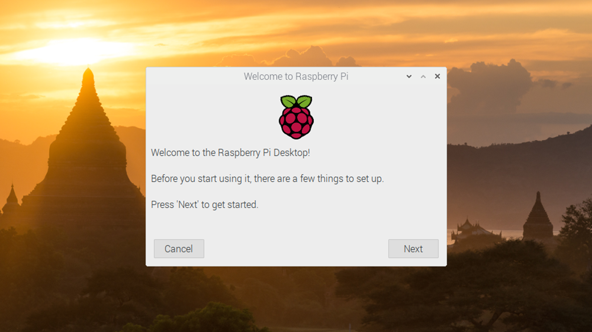
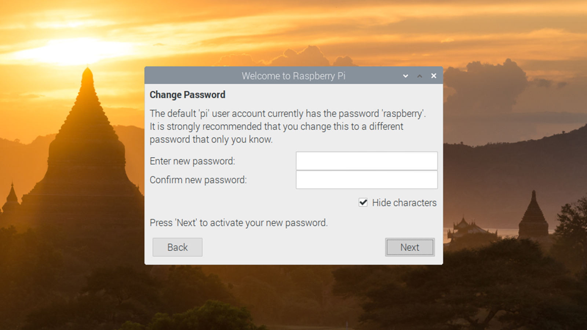
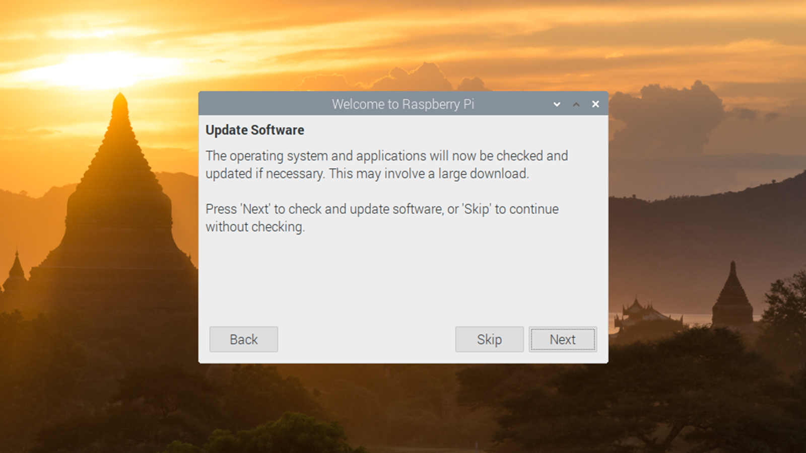

When booting up the Raspberry Pi, you will first be greeted with this page. Click the "Next" button to continue.
The next page that will appear will ask about your country, language , and timezone. Pick whatever applies to you.
By default, the password on the Raspberry Pi is "raspberry". It is recommended that you change the password, but you do not have to.
Next you will be able to connect to a WiFi network. It is only recommended to skip this step if the Raspberry Pi is plugged into ethernet.
This step asks you if you would like to update the software on the Raspberry Pi. It is recommended that you attempt to update (choosing "Next").
You are now done with the setup! You just need to restart the Raspberry Pi and it is ready to use!